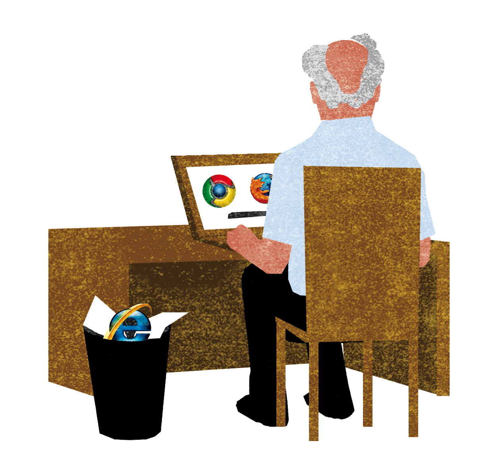
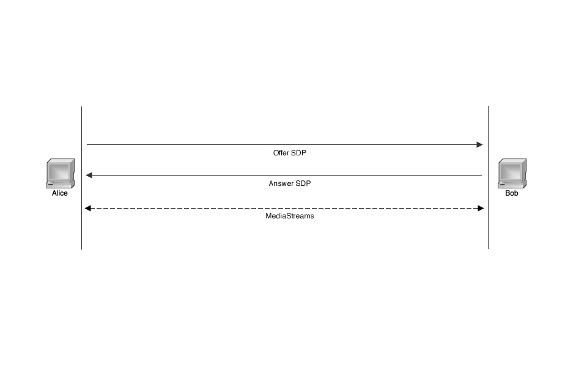
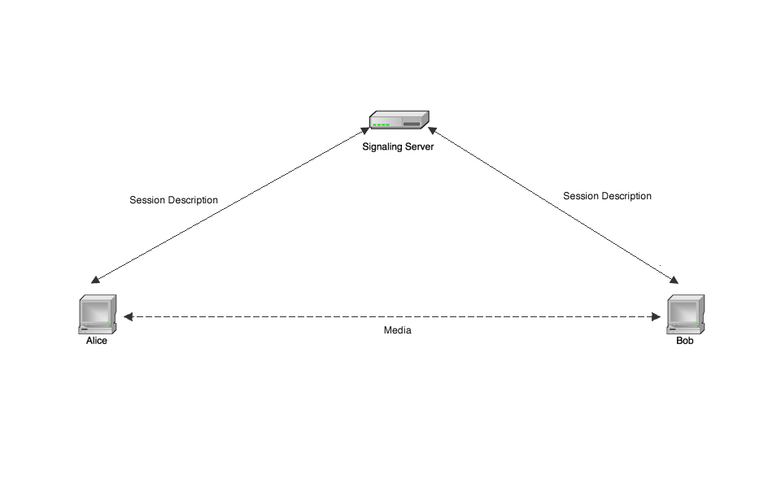
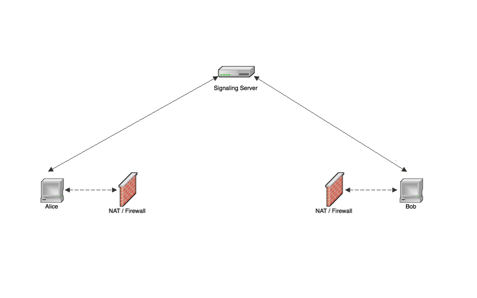
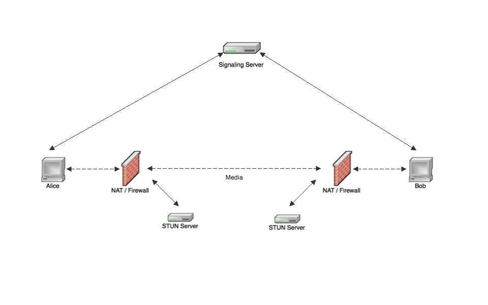
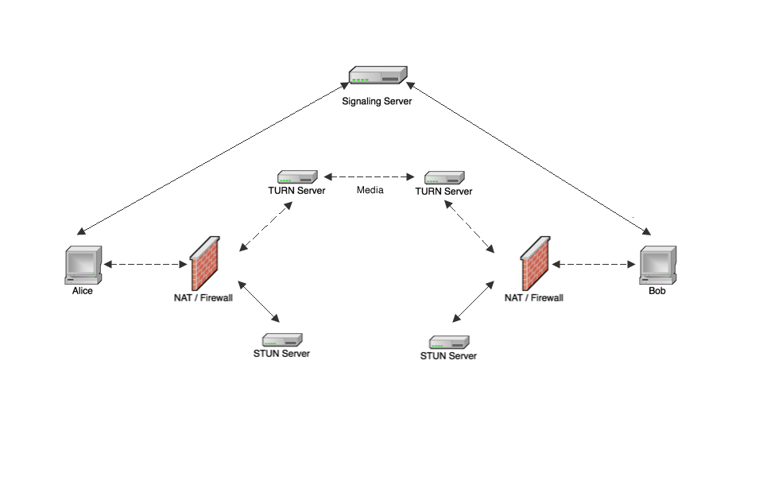

WebRTC
The basics
Stefan Aebischer - Freelance Webdeveloper
Agenda
- What is WebRTC
- The APIs
- Signaling server
- NAT traversal
- Working Demo (Hopefully)
Back in the days

Realtime communication without plugins
low cost P2P communication
high qualtiy audio and video
and data
Supported browsers and devices
- Chrome
- Firefox
- Opera
- Chrome for Android
- Native Objective-C and Java bindings
1,000,000,000+ WebRTC Clients
Illustration by Patric Sandri
WebRTC - the APIs
Three main JavaScript APIs
- navigator.getUserMedia
- RTCPeerConnection
- RTCDataChannel
Adapter.js from Google
- Abstracts Chrome/Firefox differences
- Removes vendor prefixes
getUserMedia
Access microphone and camera
var mediaConstraints = {audio: true, video: true};
function requestMedia() {
getUserMedia(mediaConstraints, successCallback, errorCallback);
}
Playback MediaStream
var localStream;
function sucessCallback(stream) {
//attach the stream to a video DOM node
attachMediaStream(
document.getElementById('local-video'),
stream
);
localStream = stream;
}
function errorCallback(error) {
//do something
}
ASCII Camera
RTCPeerConnection
Communicate Media Streams between peers
What does RTCPeerConnection for us?
- Peer to Peer communication
- NAT traversal
- Noise and echo reduction
- Jitter handling
- Compression / decompression
- Bandwidth management
- NSA protection
RTCPeerConnection Architecture
Alice calls Bob
var pc, isCaller = (user == 'Alice');
function mayStartPc() {
pc = new RTCPeerConnection();
pc.addStream(localStream);
if(isCaller) pc.createOffer(onDescription);
pc.onaddstream = gotRemoteStream;
}
function onDescription(description) {
pc.setLocalDescription(description);
sendToOtherPeer(description);
}
Bob recieves the offer and answers
mayStartPc();
function processRemoteDescription(description) {
pc.setRemoteDescription(description);
if(description.type == 'offer') {
pc.createAnswer(onDescription);
}
}
Connection established
function gotRemoteStream(stream) {
attachMediaStream(
document.getElementById('remote-video'),
stream
);
}
Example
simpl.info/pcSignaling server
P2P. So why we need servers?
- Transfer signals (offer/answer)
- Bypass NATs and Firewalls
Signaling Architecture
Signaling Server in PHP
Websocket server on built on top of
Client connects
class SignalingServer
implements MessageComponentInterface {
public function onOpen(ConnectionInterface $conn) {
$partner = $this->findPartner($conn);
$msg = array(
'type' => 'handshake',
'isCaller' => $partner !== NULL
);
$conn->send(json_encode($msg));
}
}Relay signals sent by clients
class SignalingServer
implements MessageComponentInterface {
...
public function onMessage(ConnectionInterface $conn, $msg) {
$peer = $this->findPairedPeer($from);
if($peer instanceof ConnectionInterface) {
$peer->send($msg);
}
}
}Start the server
<?php
use Ratchet\WebSocket\WsServer;
use Ratchet\Server\IoServer;
use RtcServer\SignalingServer;
require dirname(__DIR__) . '/vendor/autoload.php';
$ws = new WsServer(new SignalingServer);
IoServer::factory($ws, 8080)->run();
?>
$ php server.phpNAT traversal
The real world
STUN
Session Traversal Utilities for NAT
TURN
Traversal Using Relays around NAT
ICE
Interactive Connectivity Establishment
Find the best way to connect two peers
ICE in Javascript
function mayStartPc() {
pc = new RTCPeerConnection(
{iceServers: [
{url: 'stun:stun.l.google.com:19302'}
]}
);
pc.onicecandidate = onIceCandidate;
...
}
function onIceCandidate(candidate) {
sendToOtherPeer(candidate);
}
Process incoming ICE Candidate
function processRemoteCandidate(candidate) {
pc.addIceCandidate(
new RTCIceCandidate(candidate)
);
}
Demo time
Click me
Muito Obrigado
This talk was inspired by Arctic Monkeys and the talk "WebRTC - Plugin-free realtime communication" from Justin Uberti / Sam Dutton at Google I/O